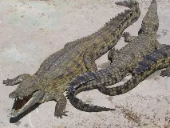
Crocodile du Nilwiki-fr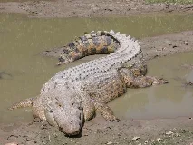
Crocodile marinwiki-fr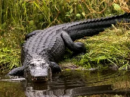
Alligator américainwiki-fr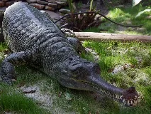
Gavial du Gangewiki-fr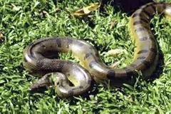
Anaconda vertbing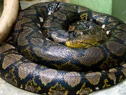
Python réticuléwiki-fr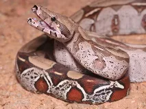
Boa constrictorwiki-fr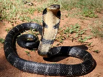
Cobra royalwiki-fr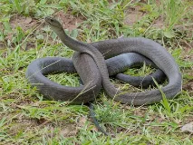
Mamba noirwiki-fr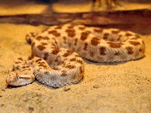
Vipère à corneswiki-fr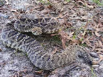
Crotale diamantinwiki-fr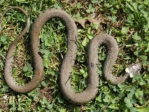
Couleuvre à collierwiki-fr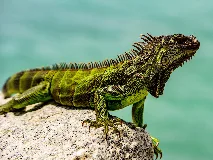
Iguane vertwiki-fr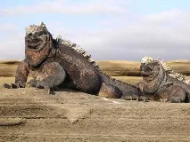
Iguane marin des Galapagoswiki-fr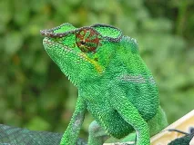
Caméléon panthèrewiki-fr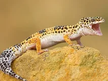
Gecko léopardwiki-fr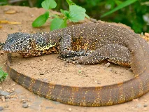
Varan du Nilwiki-fr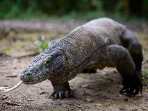
Dragon de Komodowiki-fr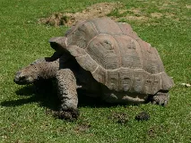
Tortue géante des Galápagoswiki-fr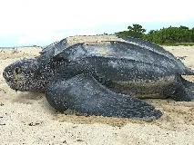
Tortue luthwiki-fr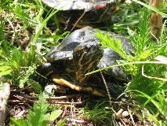
Tortue de Floridewiki-fr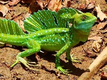
Basilic vertwiki-fr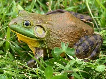
Grenouille taureauwiki-fr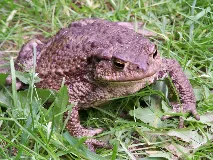
Crapaud communwiki-fr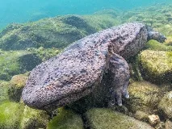
Salamandre géante du Japonwiki-fr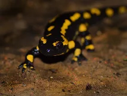
Salamandre tachetéewiki-fr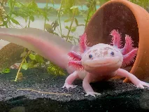
Axolotlwiki-fr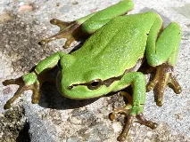
Rainette vertewiki-fr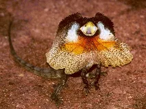
Lézard à collerettewiki-fr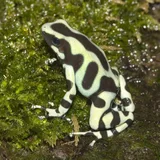
Dendrobatewiki-fr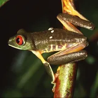
Rainette aux yeux rougeswiki-fr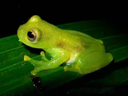
Grenouille de verrewiki-fr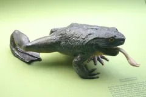
Grenouille Goliathbing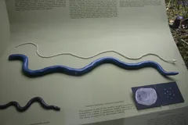
Céciliewiki-fr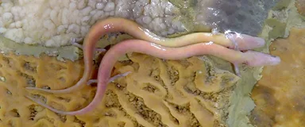
Protée anguillardwiki-fr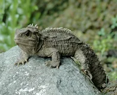
Sphénodonwiki-fr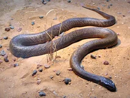
Taïpan du désertwiki-fr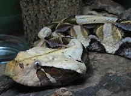
Vipère du Gabonwiki-fr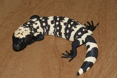
Monstre de Gilawiki-fr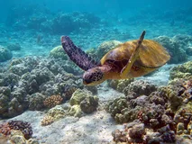
Tortue vertewiki-fr